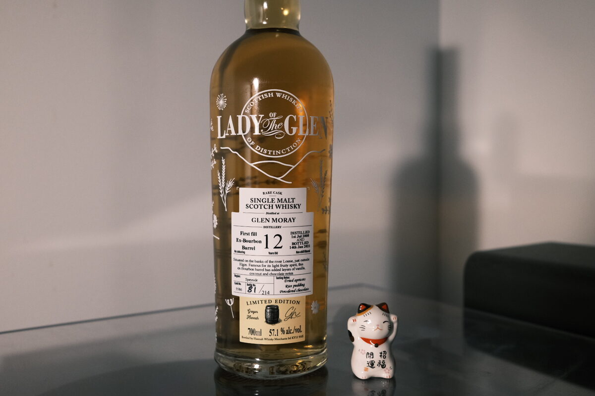

Glen Moray 2008 Lady of the Glen 12 years 57.1% (first fill exbourbon barrel)
First fill exbourbon! Full term. I’m expecting something sweet…
Colour Yellow gold.
Nose Toasted coconut. Vanilla and caramel. Toffee. As expected: very sweet! The cask has done its job. Golden syrup over pancakes, a side of whipped cream. Banana lollies. Creamy malt. Popcorn. Soft cookies with a bit of cinnamon. Melting butter. With water: a cake-like sweetness. Banoffee tart. Some fresh orchard fruits. This one swims very well.
Palate An immediate explosion of toffee, caramel, sugar – you name it – sweetness. Very creamy. A citrus acidity too on the attack: oranges, lemons. Accompanied by a lightly fruity sweetness: fresh grapes? Cinnamon and cloves, oak spices. With water, the malt reveals itself. Very clear! Sweet biscuits and a light note of tropical fruits.
Finish Orange and apple juice and a bit of mint. Quite hot, spicy. Whole tubs of vanilla custard and assorted pastries. Malty. Strawberries and cream. A touch of coconut. With water, a whack of peppermint to go alongside the vanilla.
Comments Very much a dessert dram, I think. Driven by grain and sugar, not fruit or wine. Otherwise conventional and honest malt. Definitely benefits from a splash of water. 86/100.

Posted by Dominic on 12 May 2021